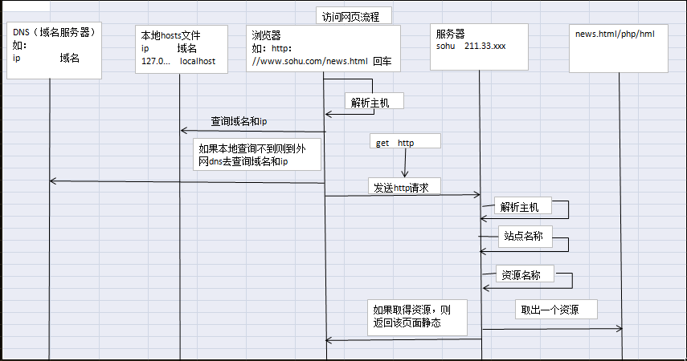

PHP要点
php注意事项
1、单引号和双引号的区别: 在php中双引号里的字段会经过编译器解释，然后再当作HTML代码输出；单引号里面的不进行解释，直接输出。
php知识点:
1、1.PHP和HTML可以混写 2.PHP变量的数据类型是变化的 3.PHP变量的数据类型是由运行时的上下文决定
2、变量总是属于某种类型 变量是具体的 类型是抽象的
3、代码的健壮性、代码的可扩展性、代码的安全性、代码的效率（并发、速度）
4、PHP中$a变量没有赋值时 var_dump($a)输出一个NULL
5、PHP中的整数都是有符号的，php不支持无符号的数
6、PHP中定义字符串可以用双引号或者单引号
7、在PHP中当一个变量包含在双引号中时，会输出它的值，而包含在单引号中时输出其字符本身
8、php三元运算符: 表达式1？表达式2：表达式3
9、php字符串运算符，字符串连接符是点 (.)
10、php中switch语句 case 后的常亮可以是 int float 字符串 bool null; switch(表达式) 里的表达式如果是'1'字符串1则会转换长整数1进行匹配
11、php中常量通过define函数或const来定义define("常量名"，常量值)、const 常量名 = 常量值
PHP函数:
1、自定义函数的基本语法: function 函数名(参数列表){ 函数体; return语句(可以有，可以没有) }
2、php中函数名不能一样
3、php通过require、require_once或include、include_once方法把一个php页面引入到另一个php页面中
4、require对同一个页面可以引入多次，require_once对同一个页面只引入一次。include、include_once同理
5、require和include区别: require如果引入出错则终止程序执行，include引入出错不终止执行
数组:
1、php中数组是一组关键字和值的集合，值可以是任何一种类型。
2、通过函数count计算数组中的元素个数-->count(数组名);
3、创建数组: 如: $array[0]=1; $array[1]=2;$array[2]=3; 几个注意事项:①[0]: 称为下标或关键字②$array[0]: 称为数组的一个元素③1: 表示该$array[0]元素对应的值④$array: 是该数组的名称
4、创建数组的第二种方式 : $arr = array(1,2,3);
5、创建数组的第三种方式: 默认情况下元素的下标是从0开始编号的，但是我们也可以自己指定。基本语法: $array['logo']='北京';$array['aa']=123;或者$arr=array("logo"=>"北京"，"aa"=>123),此时需要foreach进行遍历foreach($arr as 变量1=>变量2)
6、php数组可以动态增长
7、php把数组当作参数传递给函数不是按引用传递的，如果想把数组的地址传递给函数需要在数组名前加上取地址符&。如 : 定义一个数组: $arr=array(.....); 调用函数fun（$arr）; function fun（&$arr）{}此时函数fun接收到数组的地址。
8、php中二维数组: 二维数组定义: $arr = array(array(1,2),array(3,4));或$arr[] = array(1,2);
浏览网页流程:
